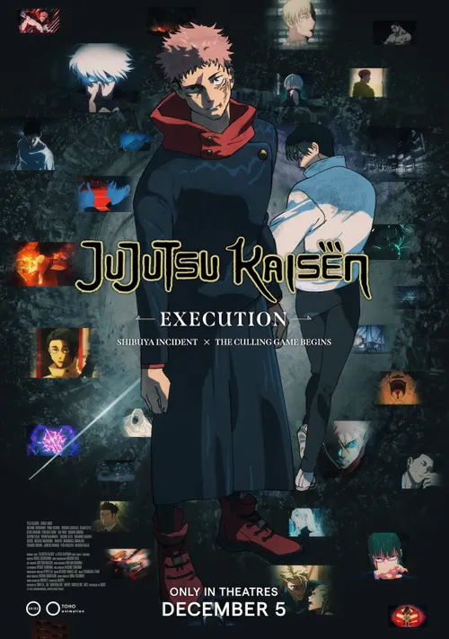

Jujutsu Kaisen:
Execution
Big action, memorable characters, and a world I want to keep exploring.
ANIME / MOVIEMovies · music · games
A personal corner for the movies, music, and games worth talking about. No industry jargon, just my honest take.
Browse the reviews
The latest take
The world of Jujutsu Kaisen is packed with big fights and strange curses, but the characters are what keep me invested. This is an easy pick for anime fans who want action with a story behind it.
MY VERDICT A must-watch for JJK fans.
Read the reviewA little bit of everything
Big action, memorable characters, and a world I want to keep exploring.
ANIME / MOVIEFast-paced matches make this one I keep coming back to.
VIDEO GAMEA favorite artist for laid-back tracks with a distinctive sound.
MUSICWho’s writing?
“I’m Jace, a high school student learning computer science and sharing the stuff I enjoy along the way.”
A bit about me